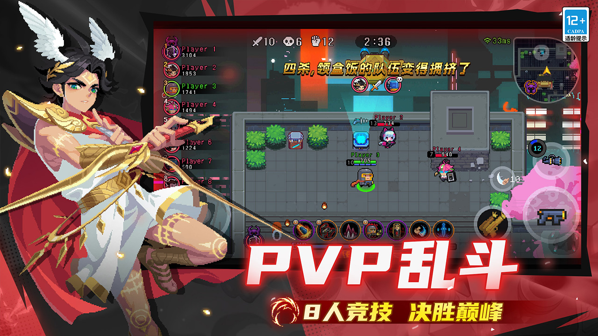
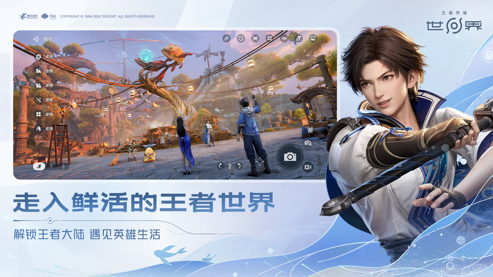

手柄玩家转战安卓的第一选择？我用了仨月 k2er 才说这话
安卓外设映射工具少说也有七八款在跑，但真正把手感做透的没几个。k2er 凭什么能让我把老伙计换掉，又在哪些地方让新用户望而却步——一篇说清。
先摆个坐标
安卓外设映射这个类目说大不大、说小不小。老牌工具盘踞市场多年，广告植入和付费门槛逐年水涨船高；后起之秀要么功能残缺、要么手感粗糙到没法认真玩。我自己是从键鼠映射起步，中间换过两三个工具，最后落在了 k2er官网 上。
说实话，它不是最便宜的、也不是功能最多的，但它是目前把「核心映射手感」这件事做最扎实的一个。下面我拿实际用下来的体验，跟同类工具做个横向对一下。
它比别家好在哪
摇杆专项挖得深——这是真给手柄玩家写的
大部分映射工具的摇杆支持都停在"能识别、能转虚拟摇杆"的水平。k2er 不一样，它专门开了一个自由视野摇杆模式——长按一个切换键，手柄右摇杆临时从瞄准切到小眼睛，松开立刻回到瞄准。
这个功能我找过至少三款同类工具，要么根本没有、要么实现得有延迟。想想手柄玩 FPS 的场景：你正右摇杆瞄准前方，敌人从左边绕过来了——键鼠玩家 Alt 长按切小眼睛，一秒扫完；手柄玩家呢？以前只能慢慢转过去，还没转过来脑袋就没了。现在一个长按 R2 就能快速瞟一眼，松手立刻回正，这个流畅度真的是用过就回不去。

MOBA 细节到位——说明它摸过真实玩家的痛点
MOBA 玩家对映射工具的考验比 FPS 还苛刻。定向技能的瞄准精度、取消键的响应速度、右键行走的跟手程度——这些东西做不好，整场对局的体验都毁了。
k2er 在 MOBA 专项上有两个我特别认可的点：一是取消键可以单独绑定，瞄准到一半后悔了按一下就能中断，不会浪费冷却——我见过不少工具要么没有这个功能，要么取消逻辑跟技能键耦合在一起搞不清楚；二是它的文档里专门给了十字键版 MOBA 技能键的配置说明，连 Switch Joy-Con 这种非主流输入设备的适配都写到了。
这种细节不是功能堆得多，而是你用的时候能感觉到作者自己就是个玩家——知道真正玩起来会在哪个环节卡壳，提前把坑填上了。
设备覆盖广——有线蓝牙通吃
我有段时间手柄蓝牙延迟严重，又不想放弃外设方案，就研究了有线接法。后来去k2er文档翻了一下才弄明白，里面专门写了扩展坞的接线方式，三个关键点一条不落：扩展坞必须供电、USB OTG 开关要开、先插扩展坞再插外设。这些都是新手最容易踩的坑，别的工具要么没写、要么就一句话带过。
2.4G 键鼠套也能用，Switch Joy-Con 分开蓝牙配对也能识别，Xbox 和 PS 手柄的 HID 模式切换都有说明——基本上你手里有什么设备，它都能接上。

为这些优势它付出了什么
上手门槛确实比竞品高
功能多、参数细，意味着你不能像用有些工具那样——从k2er下载拿过来打开就能玩。光是四种点击模式（同步 / 间隔 / 单发 / 长按）、瞄准摇杆的灵敏度曲线、宏的轮转状态配置——新手第一次面对这些参数时大概率会懵一阵子。
好消息是它的文档写得够细，每个参数都有解释，还有典型场景的推荐值。坏消息是你得愿意花半小时去看这些，否则调出来的映射要么手感飘、要么误触多。
平台限制：主要还是安卓
虽然安卓是主战场，但如果你偶尔也想在其他平台用映射方案，k2er 目前覆盖还比较集中。这不算什么硬伤——毕竟安卓外设映射本身就是个小众需求，但如果你是多平台玩家，可能需要额外备一个工具。
高级宏灵活度不如某些竞品
我自己不怎么用复杂宏，但看过朋友折腾——k2er 的宏功能够用但不算花活，有些极端的自动化需求（比如复杂的条件分支、自定义脚本逻辑）在它这里实现不了。不过话说回来，真有这种需求的玩家毕竟是少数，大部分人用不到。
选它还是选别的
选 k2er 的人：认真玩安卓游戏的玩家——不管你是手柄党还是键鼠党，只要你在乎手感、愿意花时间调参数，它能给你最接近原生的操控体验。FPS 要自由视野、MOBA 要瞄准精度、格斗要连发间隔——这些细节它都做到了。
选别的的人：如果你只是想偶尔玩两把，不想折腾参数配置，可能更适合找个更傻瓜的工具——打开、简单拖一下位置、能玩就行。还有如果你是多平台玩家，或者需要非常复杂的宏自动化，k2er 可能不是最适合的那个。
最后一句实在话
我前后换过好几款映射工具，每次都觉得"够用来着"，但换到 k2er 之后才发现——原来映射工具的手感还能做到这个程度。它不是完美的，但它在"把安卓外设映射做扎实"这件事上，目前是我见过最靠谱的选择。对了，文档维护我同时放在了 GitHub、Gitee 和 GitCode 三个仓库，国内访问哪个顺手就用哪个。